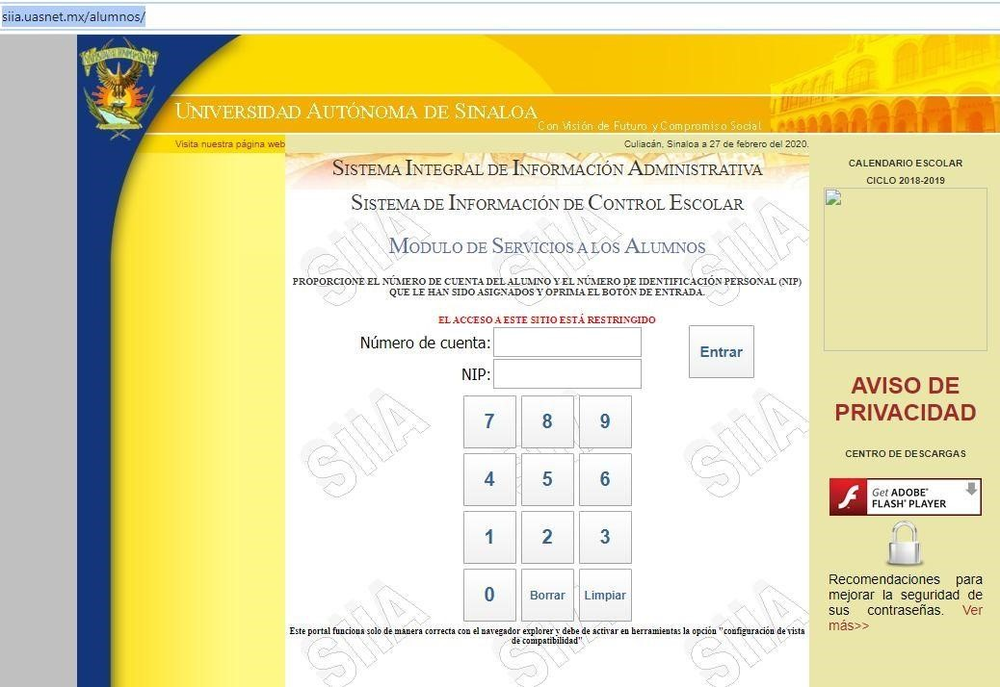
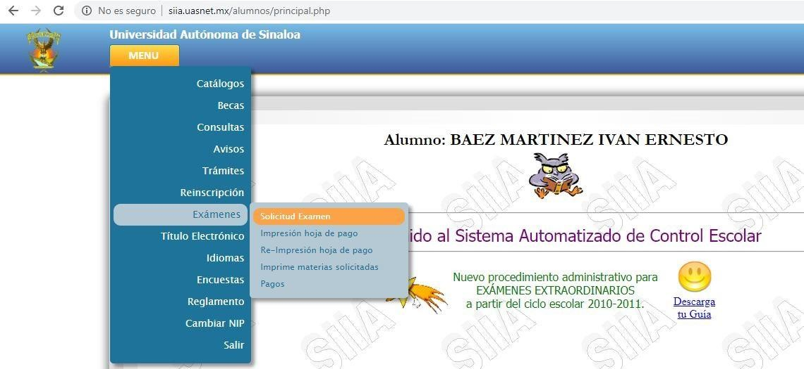
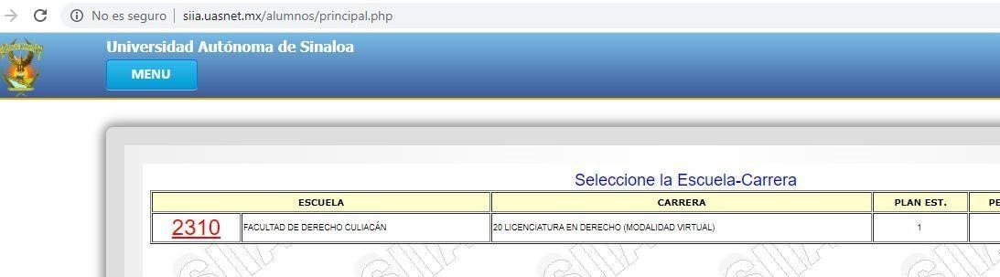
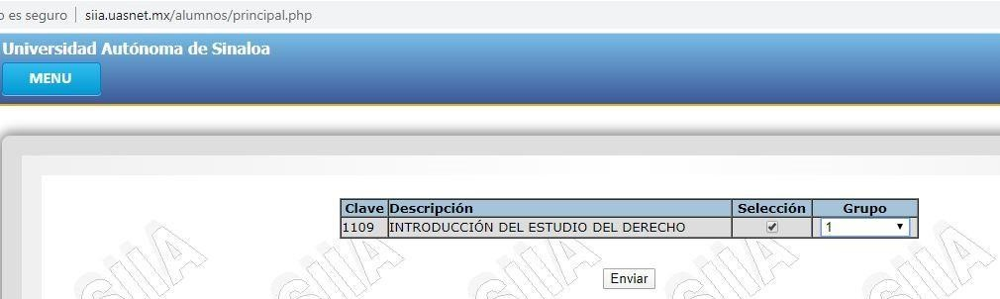

Ingresara a la página http://siia.uasnet.mx/alumnos/
Ingresar su número de cuenta y nip (sino tiene su nip favor de pedirlo a la coordinación).
Posicionar el cursor en el menú: exámenes y solicitud de exámenes(dar un clic).
Seleccionar la escuela 2540(dar un clic)
Seleccionar los exámenes a solicitar (solamente te permite solicitar 1 vez, asegúrate de solicitar los exámenes que necesitas presentar) y escoger el grupo que te corresponde y enviar, para que se les genere el recibo de pago, una vez generado el recibo de pago no podrá hacer ninguna modificación de los exámenes ya solicitados.
Una vez generado el recibo, tiene que imprimirlo y acudir a realizar el pago correspondiente, ya que este tiene fecha de vencimiento, una vez pasada esa fecha ya no se podrá realizar el pago y usted no podrá aparecerá las actas de examen.
Una vez realizado el pago de su extraordinario, debe de ver el calendario de aplicación de los exámenes.